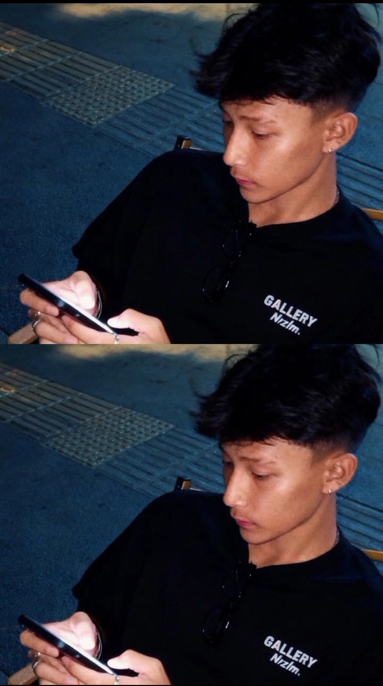
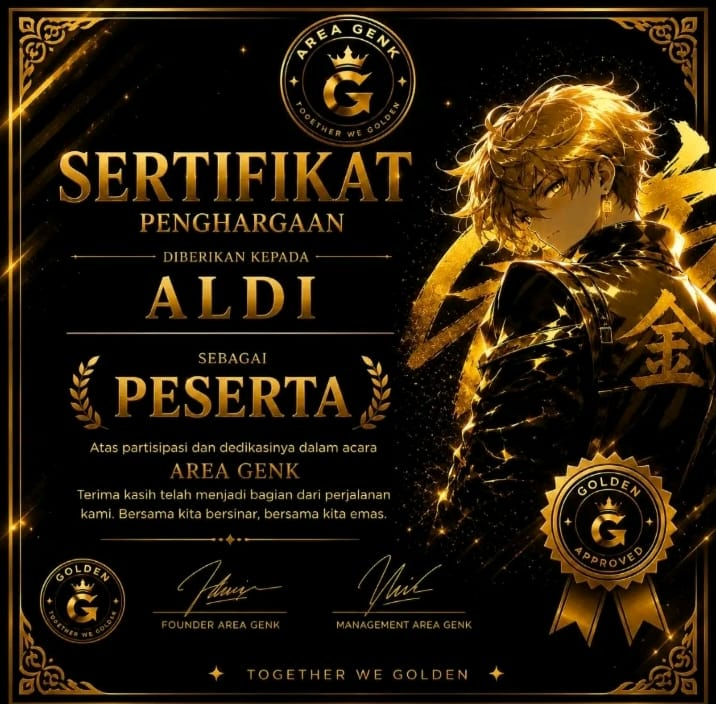
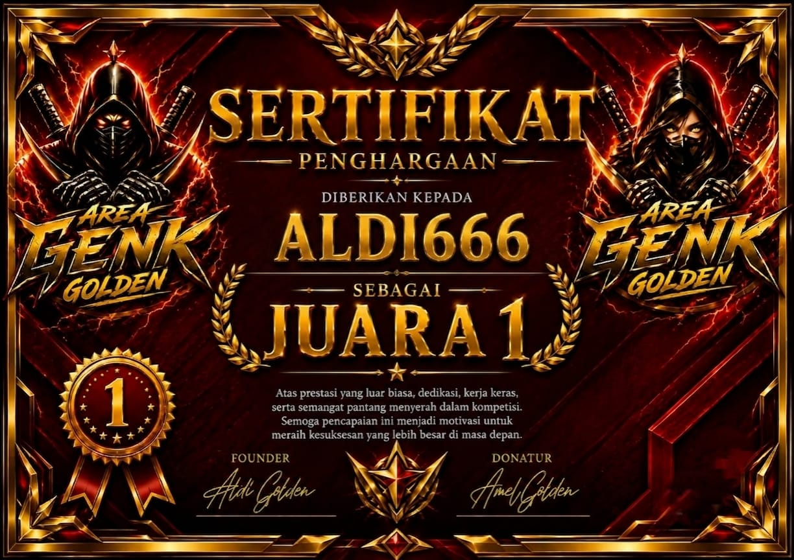
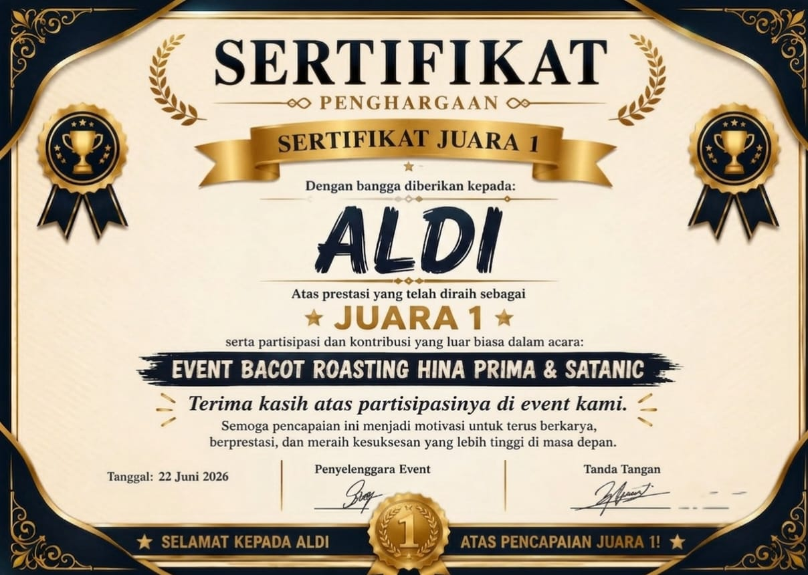
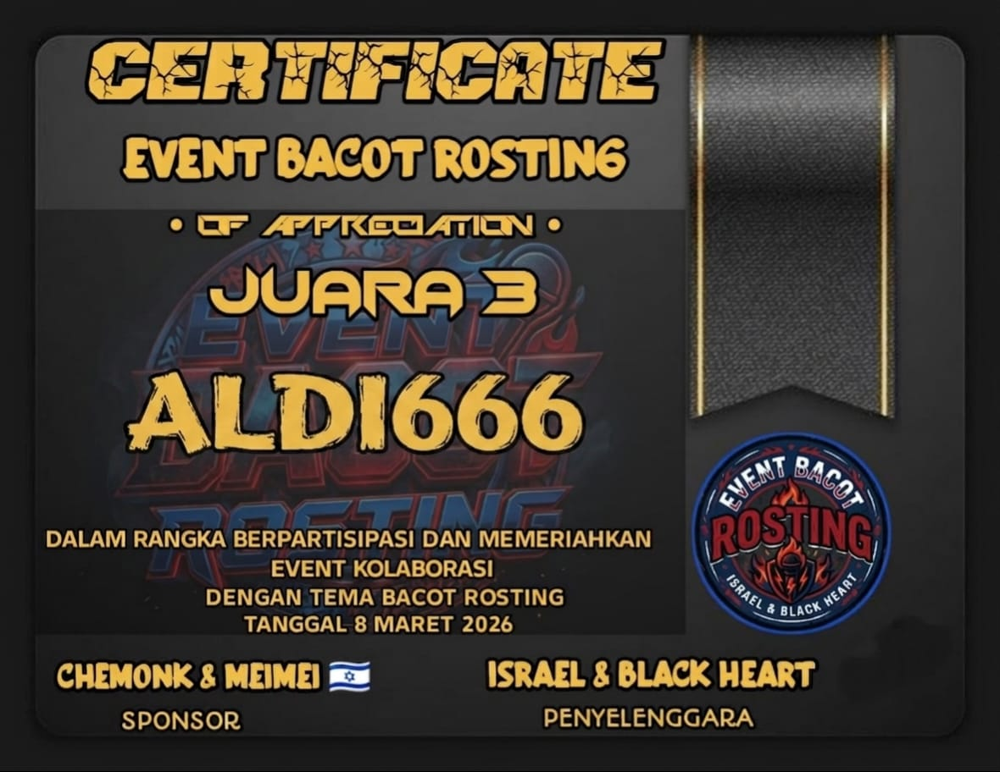
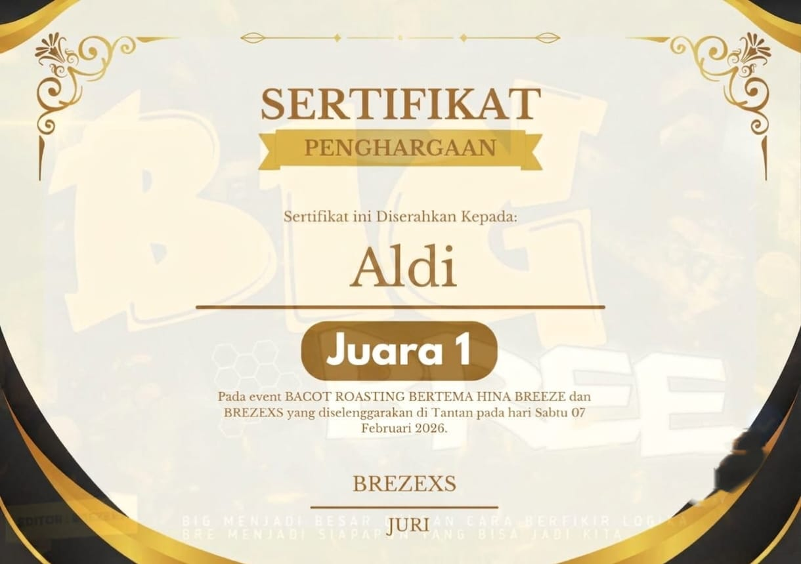
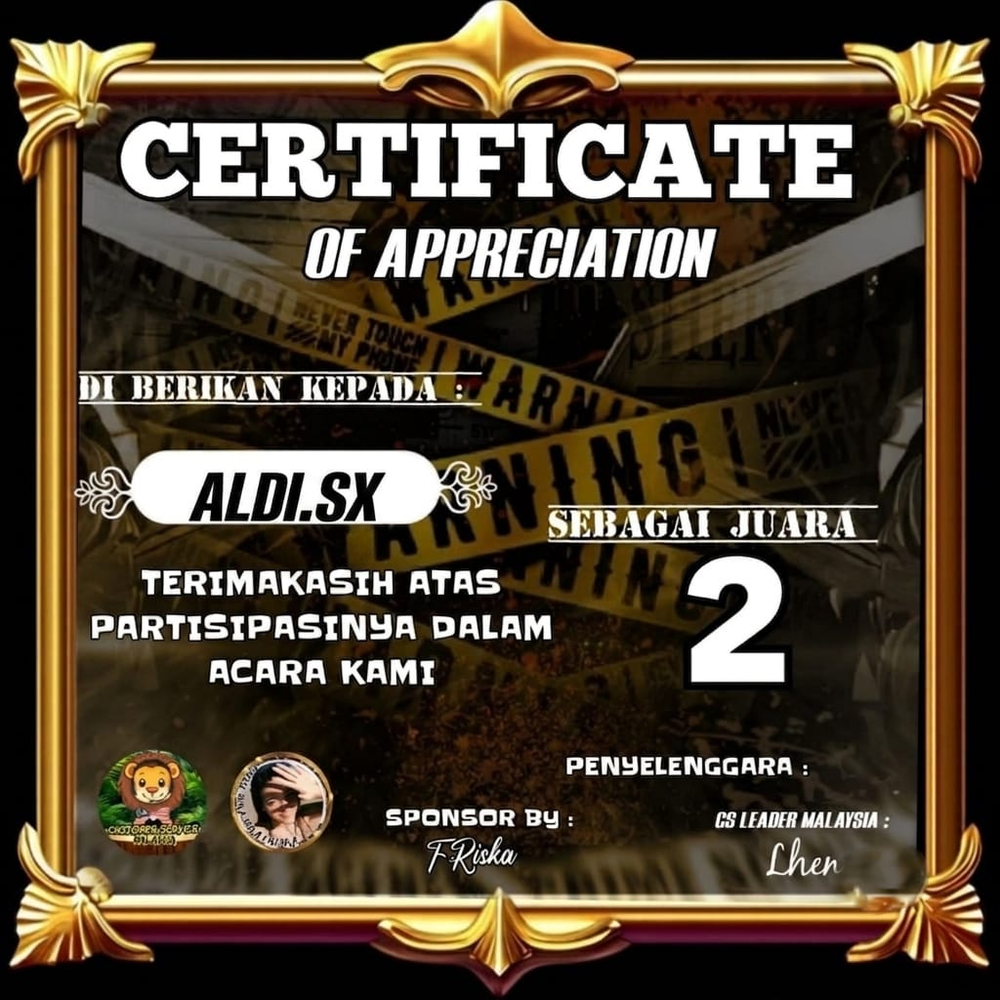

Aldi • Van • Vano
Website ini membahas profil Aldi, Van dan Vano yang dikenal di dunia virtual, mulai dari perjalanan, kemampuan, hingga berbagai sertifikat yang berhasil diraih.
Tentang Artikel Ini
Artikel ini dibuat sebagai media informasi yang membahas profil Aldi, Van dan Vano beserta perjalanan mereka di dunia virtual.
Informasi yang tersedia pada halaman ini akan terus diperbarui apabila terdapat prestasi, sertifikat maupun dokumentasi baru.
Daftar Isi
Siapa Itu Aldi?
Aldi atau Aldipriynsh merupakan abang sekaligus teman dari Van dan Vano. Aldi juga mendapatkan julukan Sang Raja Terakhir (The Last King) dikarenakan keahliannya dalam bermain sesi maupun di dalam event-event besar seperti Batros, Gladiator, dan lainnya.
Aldi juga pernah membuat Kemal, sang seleb dari Marga ROR, klarifikasi dan mengakui kekalahannya dari Aldi Sang The Last King.
Selain itu, Aldi juga mendapatkan banyak penghargaan dari luar marga maupun dari marganya sendiri.
Aldi juga memperoleh banyak sertifikat juara, mulai dari Juara 1 hingga Juara 3 dalam berbagai event.
Aldi juga dikenal di berbagai aplikasi seperti Telegram, TikTok, maupun WhatsApp.
Siapa Itu Van?

Van merupakan adik pertama Aldi Sang The Last King.
Van atau Putra juga dikenal sebagai pendiri Marga 577 FAMILIA dan dikenal sebagai sosok yang tangguh serta tidak takut kepada lawannya.
Van juga memiliki sifat yang angkuh, namun tetap peduli terhadap teman sekaligus member dari marganya.
Van juga memiliki bakat yang sama seperti abangnya, yaitu Aldi Sang The Last King.
Van berbakat dalam Batros, Gladiator, dan juga argumen.
Siapa Itu Vano?
Vano atau Rivano merupakan adik kedua dari Aldi Sang The Last King.
Vano merupakan sahabat terdekat Van. Namun, Vano dan Van memiliki perbedaan dalam segi bakat maupun nada bicara.
Vano dikenal selalu menggunakan nada bicara yang lebih tinggi dan lebih aktif di bidang Engineering serta Cyber Security.
Sedangkan Van memiliki gaya bicara yang lebih slow dan santai di awal. Van juga lebih aktif di bidang event seperti Batros, Gladiator, dan argumen.
Ringkasan
Aldi, Van, dan Vano merupakan tiga sahabat yang memiliki karakter, kemampuan, dan bidang yang berbeda. Perbedaan tersebut menjadikan mereka saling melengkapi dalam berbagai aktivitas di dunia virtual.
Sertifikat & Penghargaan
Berikut merupakan beberapa sertifikat yang berhasil diperoleh Aldi dalam berbagai event.






Prestasi
6+
Sertifikat
3
Tokoh
577
FAMILIA
Pertanyaan yang Sering Dicari
Siapa itu Aldi?
Aldi atau Aldipriynsh merupakan abang dari Van dan Vano yang dikenal dengan julukan The Last King.
Siapa itu Van?
Van atau Putra merupakan pendiri Marga 577 FAMILIA.
Siapa itu Vano?
Vano atau Rivano merupakan sosok yang lebih aktif di bidang Engineering dan Cyber Security.
Apa itu Marga 577 FAMILIA?
577 FAMILIA merupakan nama marga yang didirikan oleh Van.
Galeri Profil
Penutup
Website ini dibuat sebagai media informasi mengenai Aldi, Van, dan Vano. Semua informasi yang tersedia akan terus diperbarui apabila terdapat dokumentasi, sertifikat, maupun pencapaian baru.